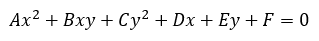

¿Qué es la elipse?
La elipse como lugar geométrico: Es una curva plana, simple y cerrada con dos ejes de simetría que resulta al cortar la superficie de un cono por un plano oblicuo al eje de simetría con ángulo mayor que el de la generatriz respecto del eje de revolución.
Elementos de la Elipse
- Focos: Son los puntos fijos F y F'.
- Eje focal: Es la recta que pasa por los focos.
- Eje secundario: Es la mediatriz del segmento FF'.
- Centro: Es el punto de intersección de los ejes.
- Distancia focal: Es el segmento segmento de longitud 2c, c es el valor de la semidistancia focal.
- Radios vectores: Son los segmentos que van desde un punto de la elipse a los focos: PF y PF'.
- Vértices: Son los puntos de intersección de la elipse con los ejes: A, A', B y B'.
- Eje mayor: Es el segmento segmento de longitud 2a, a es el valor del semieje mayor.
- Eje menor: Es el segmento segmento de longitud 2b, b es el valor del semieje menor.
- Ejes de simetría: Son las rectas que contienen al eje mayor o al eje menor.
- Centro de simetría: Coincide con el centro de la elipse, que es el punto de intersección de los ejes de simetría.
Ecuaciones de la Elipse:
Ecuación en su forma canónica:
Si en centro de la elipse es el origen nos indica que las coordenadas del punto (h, K), son (0,0).
Ecuación en su forma general:
Desarrollando los cuadrados de los numeradores de la ecuación ordinaria, eliminando denominadores y simplificando, se llega a la ecuación general de la elipse, que en su forma extensa es la ecuación general de las cónicas: